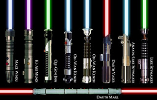
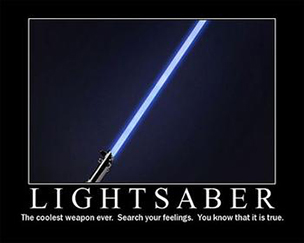

STAR WARS Lightsaber Colour Meanings
In order for a Jedi or a Sith to place the crystal in the lightsaber they must first meditate on the crystal for a few days. The builder must connect with there weapon through the Force in order to be better at using the lightsaber than anyone else who tries to use it.
Certain colours are associated with the creator whos force is in the crystals. The colour is based on how powerful the energy is and the force being used.

Common Beam Colours of lightsabers
- RED This is the colour of a Sith of Dark Jedi, usually the user is part of the dark side and represents blood and violence
- Blue This is the colour of a Jedi Gaurdian who is on the physical level, intended to fight the Sith
- Green This is the colour of a Jedi Consular who ponders at mystery and fights the dark side at its heart
- Yellow This is the colour of a Jedi Sentinel who honed their skills through combat and profound pursuits
- Light Violet, Light Yellow and Light GreenThis colour can only produce minimal damage and is used in training and sparring
- White This colour is commonly used in training and causes no damage if someone is struck with it

What kind of lightsaber do you think fits you the best? Take a look at this site and figure out what colour you are....... Take the Light Saber colour quiz
Source: Lightsaber Construction, Color Meaning, and Crystals